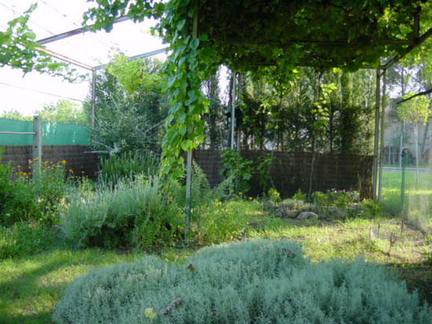

|
LA
TORTUGA MEDITERRÁNEA: Testudo hermanni
Counyat, 2004
1 - Origen,
hábitat.
2 - Subespecies.
3 - Mantenimiento en cautividad.
4 - Alojamiento.
5 - Alimentación.
6 - Puesta e incubación.
7 - Legislación. |
 |
1. ORIGEN Y HÁBITAT.
La
Tortuga Mediterránea: T. hermanni, aparece distribuida por algunos de
los países europeos bañados por el mediterráneo, las podemos encontrar
desde España hasta Grecia, pasando por Francia, Italia y algunas de
las islas del mediterráneo occidental.
Distribución por
Europa de la especie T. hermanni.
Las poblaciones
autóctonas españolas, se concentran en las Islas Baleares y en
Cataluña. Su número disminuye rápida y considerablemente a causa de la
acción de su mayor enemigo, el hombre.
Se encuentra también alguna población reducida en la Comunidad
Valenciana, aunque principalmente se trata de programas de
reintroducción organizados por la Conserjería de Medio Ambiente de
esta comunidad.
Su hábitat es diverso, se trata de animales fáciles de aclimatar por
lo que los podemos encontrar tanto en zonas de llanuras, como en zonas
de montaña con bosque mediterráneo. La vegetación predominante será la
formada por bosques de pino mediterráneo mezclados con zonas de
matorral como jaras, lentiscos o encinas.
|
|
 |
Paisaje
característico mediterráneo, formado por escasa vegetación y monte
bajo.
De gran importancia en la localización
de esta especie será la climatología, las encontraremos siempre en
climas mediterráneos no excesivamente húmedos con inviernos suaves y
veranos secos aunque influenciados por olas de frío típicamente
continentales. Las temperaturas oscilaran entre los -3º C de la
estación fría a los
35º C de la estación seca, resaltando que la temperatura media de este
clima rondará los 19º C.
2. SUBESPECIES
Actualmente se reconocen dos subespecies: Testudo hermanni hermanni
y
Testudo hermanni boettgeri.
La clasificación de estas dos subespecies ha sufrido modificaciones en
el tiempo, inicialmente se denominaron a las poblaciones orientales
como T. hermanni hermanni y a las poblaciones occidentales como
T. hermanni robermertensi , en 1952 pasa a llamarse
robermertensi a la subespecie mas occidental y es a partir de 1987
cuando se clasifican definitivamente como T. hermanni hermanni
a las poblaciones de Cataluña, Francia, Mallorca, Menorca, Italia y
como Testudo hermanni boettgeri a las poblaciones del
Mediterráneo Oriental, poblaciones que encontraremos en Grecia,
Yugoslavia, Albania, Bulgaria, Rumania y Turquía.
Debo también hacer mención a una tercera clasificación realizada en
1899 por Werner como T. hermanni hercegovinensis, la cual
parece corresponder a un núcleo aislado de población con
características comunes de las otras dos subespecies, también
podríamos encontrar en cautividad poblaciones mixtas donde se mezcla
el genoma de ambos taxones por cruces artificiales.
Las dos subespecies admitidas se clasifican en función de sus
características morfológicas, aunque hay que reconocer que son muchos
los ejemplares que pueden llegar a combinarlas, esto induce a pensar
en la existencia de hibridaciones.
• T. hermanni hermanni:
Se trata de ejemplares que no llegan a sobrepasar los 20 cm. la
coloración del caparazón se caracteriza por tener marcas de color
negro intenso sobre fondo amarillo, al igual que el plastrón aunque
éste se caracterizará por tener dos franjas negras uniformes.
Otra de las
principales características de esta subespecie, es una mancha amarilla
en la cabeza detrás de cada ojo.
Macho de T.
hermanni hermanni.
Placa pectoral < placa femoral.
•
T. hermanni boettgeri.
En
esta otra subespecie se encuentran ejemplares de mayor tamaño,
sobrepasando los 30 cm. y los 3 Kg. de peso en el caso de las hembras
adultas, su coloración es más discreta, con menor contraste pasando
por coloraciones verde oliva o marrón oscuro.

Macho de boettgeri con 12 cm. de plastrón y 900 gr de peso.
También se diferenciarán por no tener la mancha
amarilla bajo los ojos y por tener las manchas negras entrecortadas en
el plastrón.
Hay que aclarar también que son muchos los casos en los que será
difícil diferenciar una subespecie de otra, debido a la gran similitud
entre ellas o por la combinación de varias de las características
anteriormente citadas, por ello la forma más fiable de clasificarlas,
será observar la separación de las placas pectorales y femorales.
- T. hermanni hermanni: Placa pectoral < placa femoral.
- T. hermanni boettgeri: Placa pectoral > placa femoral.

Hembra de hermanni boettgeri de 17 cm. de plastrón y 1950 gr. de peso.
Placa pectoral > placa femoral.
•
Características comunes:
Se trata de subespecies casi idénticas, poseen un caparazón abonbado
por la parte superior y robusto, plano por la zona del plastrón en las
hembras y cóncavo en los machos adultos, lo que facilitará el
acoplamiento durante la cópula.
Ambas subespecies poseen 5 uñas en las patas delanteras y 4 en las
patas traseras, aunque la quinta uña delantera será de menor tamaño
que las otras o incluso habrá desaparecido. Ninguna de ellas posee
espolón en los muslos de las patas traseras, lo que nos ayudará a
diferenciarlas de otras subespecies de Testudo como las Graecas.
También las diferenciaremos de otras subespecies por poseer una uña
cornea en la punta de la cola, tanto en los machos como en las
hembras.
•
Dimorfismo sexual:
Son varios los detalles que se deben tener en cuenta para
diferenciarlos:
- Mayor tamaño de la cola en los machos que en las hembras
|

Macho de T.
hermanni hermanni. |

Hembra de T.
hermanni hermanni. |
- Concavidad en el
plastrón en el caso de los machos.
- Mayor separación de las placas anales en forma de V. En los machos
será de mayor tamaño que en las hembras, facilitando así el movimiento
de la cola.
- El tamaño y el peso serán mayores en el caso de las hembras.
- En los machos, las placas marginales traseras junto con las placas
anales, sobresalen más que en las hembras, facilitando así el
movimiento de la cola.
3. MANTENIMIENTO EN CAUTIVIDAD.
No todos los aficionados a esta especie disponen de amplios jardines
donde tenerlas en condiciones de semilibertad, será esta la mejor
manera como es lógico, con zonas de umbría y de solana.
Vista lateral
izquierda de mis instalaciones.
El tamaño del
recinto al aire libre es variable, aunque dependerá del número de
ejemplares. La proporción de ejemplares más apropiada será de un macho
por cada dos hembras.
Se puede observar que el tipo de vegetación utilizada para crear un
ambiente apropiado será el característico de la zona mediterránea, con
adelfas, manzanilla, romero, tomillo, boj, lavanda, etc. y para crear
la zona de umbría se ha utilizado un emparrado de Vid.

Vista lateral
derecha.
Como se
puede observar en la fotografía, las instalaciones se encuentran
valladas totalmente, tanto lateralmente como por la zona superior, de
esta manera evitaremos posibles ataques de roedores, aves como
cuervos, urracas o rapaces.
Es conveniente resaltar el daño que pueden ocasionar los roedores de
entre nuestros animales cuando se encuentran al aire libre y habrá que
tomar precauciones sobre todo en la época de hibernación, en la cual
los animales se encuentran indefensos. Fue esta la causa, tras padecer
uno de estos ataques por lo opté definitivamente por hibernar a mis
animales en otra zona de mayor control y habilité un cajón de madera
de grandes dimensiones en una zona seca, sin corrientes de aire y
orientada hacia el norte, consiguiendo de esta manera reducir en algún
grado la temperatura.
El alojamiento es por tanto uno de los condicionantes más importantes
para que nuestros animales crezcan sanos.
Será necesario también que las tortugas dispongan de una zona de baño,
donde refrescarse o beber en las horas de mayor calor del día.

Bebedero y zona de baño con aporte de agua automática.
4. ALOJAMIENTO.
Podemos también mantenerlas en terrarios cerrados, pero en estos hay
que hacer hincapié en elegir correctamente la iluminación, la fuente
de calor a utilizar y el tamaño del terrario.
Al tratarse de animales de sangre fría, se tiene que colocar una
fuente de calor externa, la más aconsejable será uno o varios focos
luminosos y caloríficos que proporcionen todas las carencias de
nuestros animales, se pueden también utilizar mantas eléctricas y
cables con resistencia, se debe mantener la temperatura del aire entre
25 y 32 grados aproximadamente durante el día y unos 20 grados
aproximadamente durante la noche , también se tiene que controlar la
humedad del terrario, y mantenerla entre un 50 y un 70 % , esto se
puede conseguir humedeciendo el sustrato por medio de un vaporizador o
simplemente colocando una cubeta con agua en el interior.
El sustrato a utilizar, podrá ser variado, se puede utilizar viruta de
madera, corteza de pino, fibra de coco, paja o simplemente tierra del
monte, se intentará siempre evitar sustratos con grano pequeño o que
puedan producir polvo, para evitar posibles infecciones oculares.
El tamaño del terrario irá en relación con el tamaño de los animales,
pero hay que tener en cuenta que se trata de animales muy activos, por
lo que en el caso de animales adultos es aconsejable acondicionarles
terrarios con una longitud nunca inferior a los dos metros.
La iluminación del terrario también será uno de los factores
importantes en el crecimiento del animal, para ello se colocará un
tubo fluorescente o bombilla de luz con una emisión ultravioleta de
entre un 5 y 15 %, esto facilitará la producción de vitamina D,
imprescindible para la asimilación de calcio. El terrario deberá
contar siempre con un recipiente de agua limpia, que se cambiará a
diario.
5. ALIMENTACIÓN.
No se puede olvidar el tema de la alimentación en los animales criados
en cautividad, será de máxima importancia si pretendemos mantenerlos
sanos, con un crecimiento adecuado y sin deformaciones, para ello se
buscara siempre alimentos con una proporción mínima de 2:1 de calcio
sobre fósforo, en caso de no poder conseguir esa proporción, se tendrá
que aportar calcio espolvoreándolo en su alimentación, este se
encuentra como carbonato cálcico en las farmacias, también en las
conchas de sepias o en la cáscara de huevo. No se debe abusar del uso
del calcio, ya que podría causar hipercalcificación y ocurrir lo mismo
en el caso de administrar exceso de vitaminas.
Se debe recalcar que se trata de animales totalmente vegetarianos,
aunque algunas veces puedan comer carroña, crías de ratón, lombrices o
caracoles que puedan encontrarse durante sus paseos, pero es de vital
importancia evitar en su alimentación el aporte de proteínas animales.
Quedará por tanto prohibido dar de comer a las tortugas alimentos de
perro o de gato.
Cualquier error en el mantenimiento de los animales en cautiverio
supondrá un crecimiento excesivo e implicará deformaciones en el
caparazón, lo que comúnmente se conoce como piramidismo, algo que por
desgracia aparece en la mayoría de animales criados en terrario, pero
aún más grave serán los daños que podemos causar a la salud interna
del animal. No queda clara la causa exacta de esta deformación, si no
que parece tratarse de la combinación de varios de estos errores.
Por todo esto la recomendación será que recojamos en el campo siempre
que podamos plantas silvestres para alimentarlas, las más apetitosas y
con mayor aporte nutricional serán el diente de león, la cerraja, el
jaramago o palas de chumbera entre otras, también podremos aportar
frutas, como fresas, higos o manzanas, aunque deberán ser frescos ya
que con el paso de las horas algunos alimentos se oxidan y pierden
parte del aporte vitamínico.
6. PUESTA E INCUBACIÓN.
El cortejo en esta especie se prolonga durante todo el periodo de
actividad, aunque será constante a partir de finales de Marzo,
consiste en la persecución, embestidas con el caparazón y mordiscos en
las patas delanteras y traseras de la hembra.

Cópula.
Toda
esta agresividad manifiesta por parte de los machos, puede llegar a
producir heridas y roturas en el caparazón de las hembras.
Las hembras buscarán preferiblemente zonas con pendiente, donde
excavarán con sus patas traseras un nido de unos 10 cm. de
profundidad.
Será lógico pensar que el número de huevos debe ser mayor en el caso
de las T. hermanni boettgeri, debido al mayor tamaño de las hembras,
al igual que el número de puestas, que puede oscilar entre 1 a 2
puestas con un intervalo de 3 ó 4 semanas y el tamaño de los huevos
será de unos 3 a 4 cm. de longitud.
- T. hermanni hermanni: realizará entre una y dos puestas al
año con 2 a 6 huevos cada una.
- T. hermanni boettgeri: realizará también una ó dos puestas,
pero en este caso pueden llegar a poner hasta 10 ó 12 huevos en cada
una.
- La fecha habitual de las puestas será entre los meses de abril a
julio y el tiempo de incubación rondara á 60 y 90 días.

En la foto se observa cría de 3.5 cm. de T. hermanni nacida en mis
Instalaciones.
La
incubación puede ser natural o controlada por medio de incubadoras,
esta última parece ser la más efectiva en el caso de que se mantenga
la temperatura y la humedad constantes y además será la que nos
permita sexar las crías antes de su nacimiento, esta es una ventaja
clara de la incubación artificial, aunque tampoco se pueda despreciar
algunos de los riesgos que comporta este sistema, como por ejemplo la
pérdida de las puestas por exceso de humedad o por un fallo de la
corriente eléctrica o por el simple manipulado de los huevos.
Son muchas las incubadoras que existen en el mercado por precios no
excesivamente elevados, aunque las más extendidas son las de
fabricación propia, para lo cual tan solo necesitaremos dos cajas de
plástico transparente, un termostato de acuario, un termómetro, un
higrómetro y algo de vermiculita.
La temperatura a la que decidamos incubar será la que provoque el sexo
de las crías.
Los rangos de temperatura, como se acaba de mencionar, serán los que
induzcan el sexo de los animales, para ello se incubarán entre 29 y 31
ºC si deseamos machos y a temperatura superior si deseamos hembras,
aunque no sobrepasaremos los 32.5 ºC para evitar la perdida de la
puesta o que se tengan animales con deformaciones por un crecimiento
excesivamente rápido del embrión.
7. LEGISLACIÓN.
Es en el año 1990 por medio del Real Decreto 439/1990 cuando se
clasifica a la Tortuga mediterránea dentro del Apéndice II Anexo A.
Decir también que la restricción de esta especie puede llegar a ser
superior que la ley C.I.T.E.S en cualquier comunidad del estado
español que así lo considere, es el caso de Cataluña y recientemente
también de la Comunidad Valenciana, aunque en ésta última a pesar de
estar regulado desde febrero del año 2004 sin efecto retroactivo, no
ha llegado a aplicarse por el momento.
Nota aclaratoria: Simplemente decir que todos los animales que
aparecen en el articulo cumplen con la normativa vigente, van
acompañados de su documentación cites, llevan microchips implantados
en caso de necesitarlo y se encuentran inscritos en el Soivre
correspondiente, decir también que las instalaciones son revisadas
anualmente por los inspectores del mismo.
|